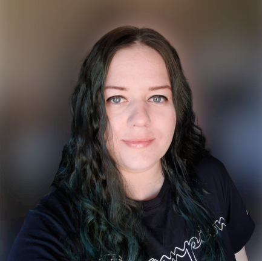

Marina Milosheva, PhD candidate in Information Science
I am a third-year PhD student in the School of Computing at Edinburgh Napier University, and a member of the Edinburgh Napier Centre for Social Informatics.
My PhD is funded through an ESRC 1+3 collaborative PhD award. It is conducted in partnership with the Scottish Graduate School of Social Sciences (SGSSS) and Skills Development Scotland (SDS). Prior to commencing my PhD, I obtained a MScR degree in Science and Technology Studies at the University of Edinburgh (with Distinction).
I can be reached at m.milosheva@napier.ac.uk; see, also, my Edinburgh Napier Research profile and my ORCID profile.
Are you a potential academic friend or collaborator? Book a virtual coffee with me through my Calendly page ☕